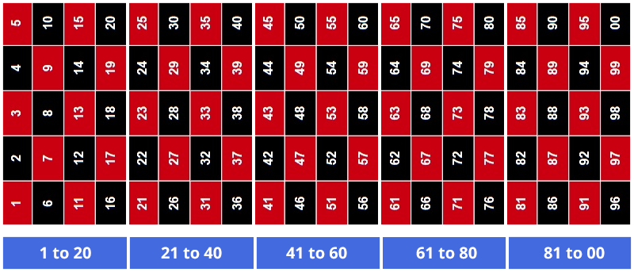

NFT Kaspa Draw is a unique blockDAG lottery where every NFT you mint becomes your ticket to win.
Fair & Transparent – Winning numbers are determined by the Kaspa blockDAG hash, making the draw tamper-proof.
Real Rewards – 1 out of 5 chance to win : 100 runners, one grand prize of 8,400 KAS plus 19 double-win spots in each game.
Simple & Fun – Mint an NFT, hold your ticket, and see if luck is on your side! Winnings will be automatically distributed to the wallet you used for minting.
Once the NFT collection is fully minted, the hash of the final NFT will determine the winners. Everything can be verified on chain. The results page table contains the relevant links: mint transaction, last mint hash, and prize payment transaction.
More detailed information below
How to play ?
There is always a draw in progress. It is visible on the homepage. To participate, buy your NFT on Kaspa.com. The link is indicated in the table on the homepage.
When you have purchased your NFT, you will see your address displayed in the table on the homepage with the corresponding NFT number.
Once the 100 NFTs are minted, the winners are visible on the results page, as well as the transactions of the funds sent. Another draw is organized and visible on the homepage.
How Winners Are Chosen
- Find the last minted NFT hash on the Kaspa Network (see link on results page).
- Read the hash from left to right until you find the first two characters that are digits (ignore letters).
-
These two digits form the winning number:
- Example: If the digits are 5 and 1, then #51 is the winning number.
- If the result is 00, it is treated as #100.
-
NFT Kaspa Draw uses a 5 × 20 segment system to determine winners:
- Segment 01–20
- Segment 21–40
- Segment 41–60
- Segment 61–80
- Segment 81–100
-
The segment containing the winning number determines:
- Grand Prize Winner: Exact match with the winning number → 8,400 KAS
- 19 Double Winners: All other NFTs in the same segment → 400 KAS each (double the stake)
- All NFTs outside the segment = no prize

Examples
If Winning number is 17 : Segment 1–20
- Grand Prize Winner: NFT #17 → 8,400 KAS
- Double Winners: NFTs 01–20 (except #17) → 400 KAS each
- No Prize: NFTs 21–100
If Winning number is 25 : Segment 21–40
- Grand Prize Winner: NFT #25 → 8,400 KAS
- Double Winners: NFTs 21–40 (except #25) → 400 KAS each
- No Prize: NFTs 01–20 and 41–100
If Winning number is 51 : Segment 41–60
- Grand Prize Winner: NFT #51 → 8,400 KAS
- Double Winners: NFTs 41–60 (except #51) → 400 KAS each
- No Prize: NFTs 01–40 and 61–100
If Winning number is 77 : Segment 61–80
- Grand Prize Winner: NFT #77 → 8,400 KAS
- Double Winners: NFTs 61–80 (except #77) → 400 KAS each
- No Prize: NFTs 01–60 and 81–100
If Winning number 91 : Segment 81–100
- Grand Prize Winner: NFT #91 → 8,400 KAS
- Double Winners: NFTs 81–100 (except #91) → 400 KAS each
- No Prize: NFTs 01–80
Summary
- 1 Grand Prize Winner wins 8,400 KAS
- 19 Double Winners each win 400 KAS (double their stake)
- 80 NFTs lose (no prize)
- Fully transparent and verifiable on the Kaspa Network
- Each draw has its own dedicated wallet, called the Deploy Wallet Address, which is used to deploy the NFT collection and distribute winnings. The wallet link is available on the results page.
If a player wins the Grand Prize Winner twice in a row, he wins the jackpot prize pool. The home page shows the current jackpot amount (Set up for the second draw).
How the winnings are distributed
There are 100 players with tickets of 200 Kas each, for a total of 20,000 Kas. Here is how the winnings are distributed:
| Winnings table |
Runners |
Kas |
Total |
| Grand Prize Winner |
1 |
8400 |
8400 |
| Double Winners |
19 |
400 |
7600 |
| To Jackpot prize pool |
1 |
2000 |
2000 |
| NFT Deploy fees |
1 |
1000 |
1000 |
| Team |
1 |
1000 |
1000 |
|
Total |
|
20000 |